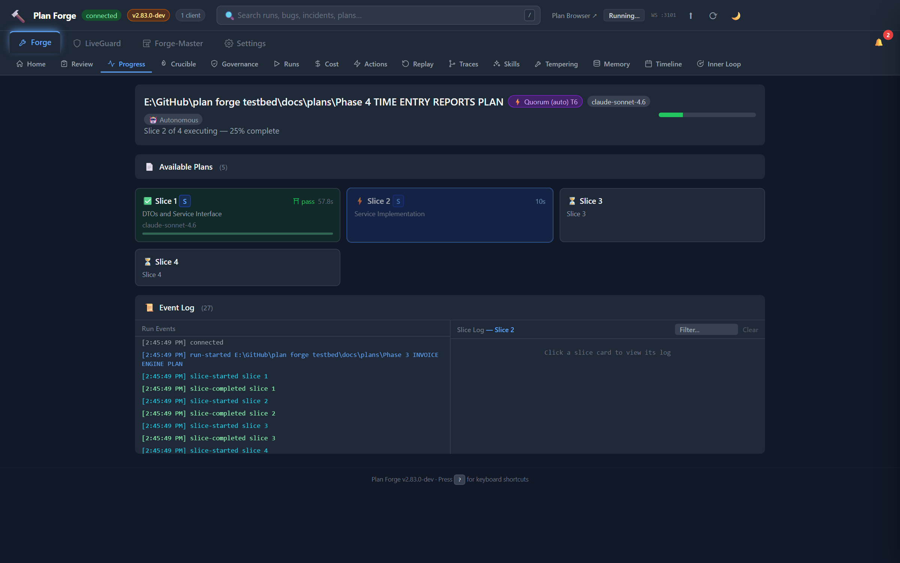
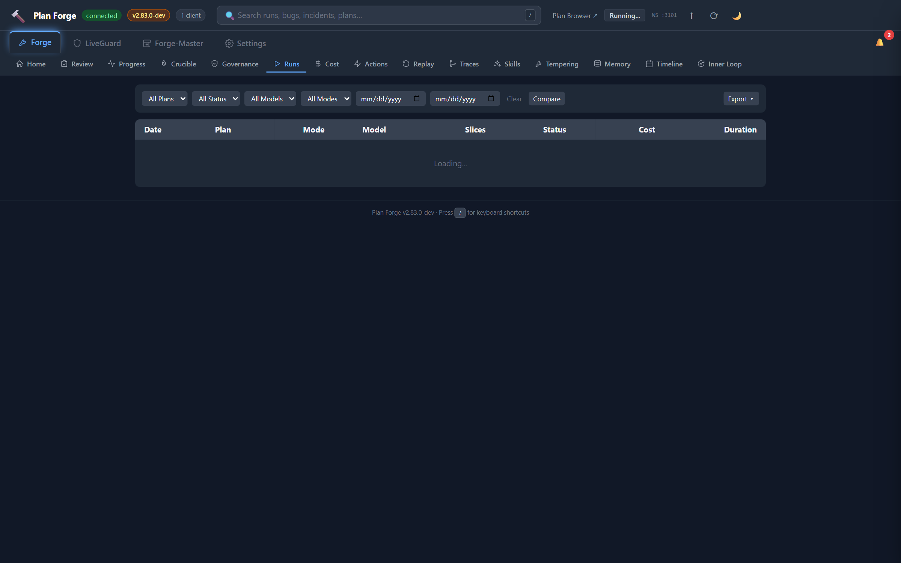
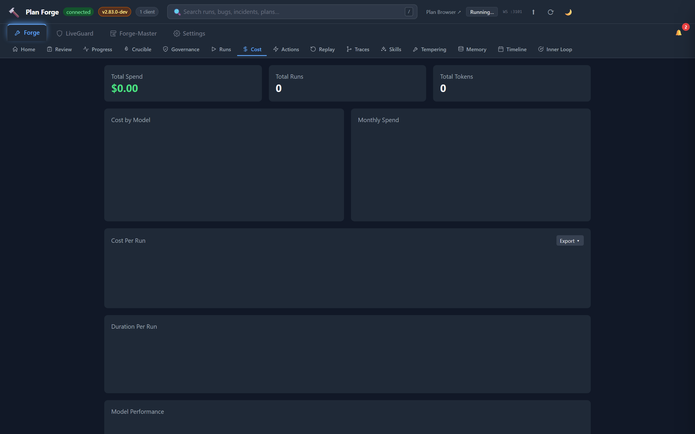
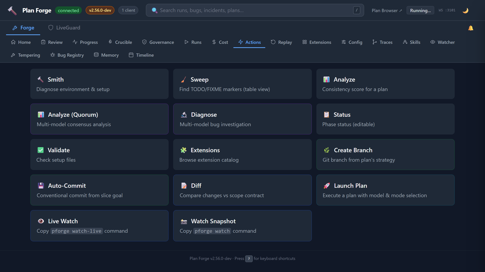
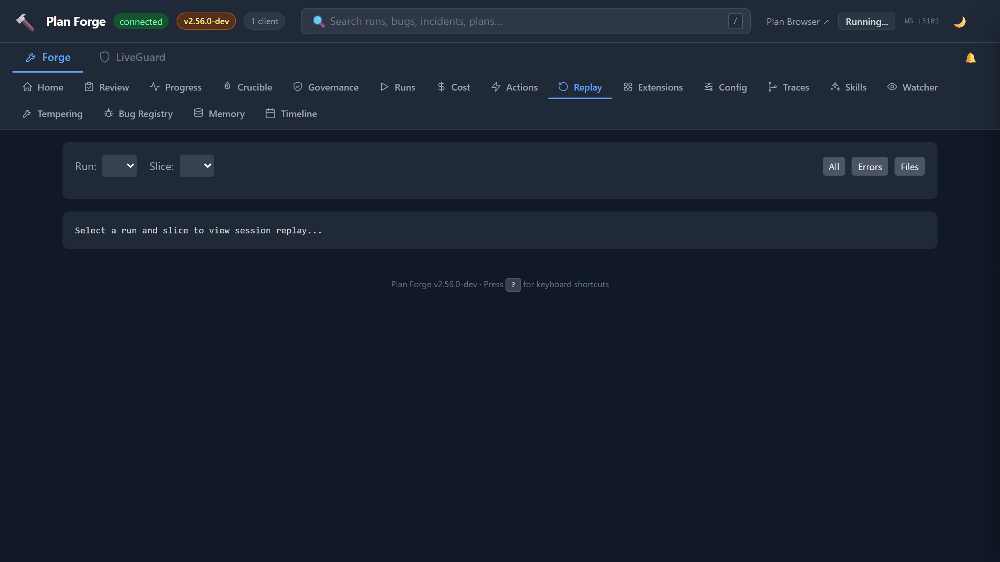
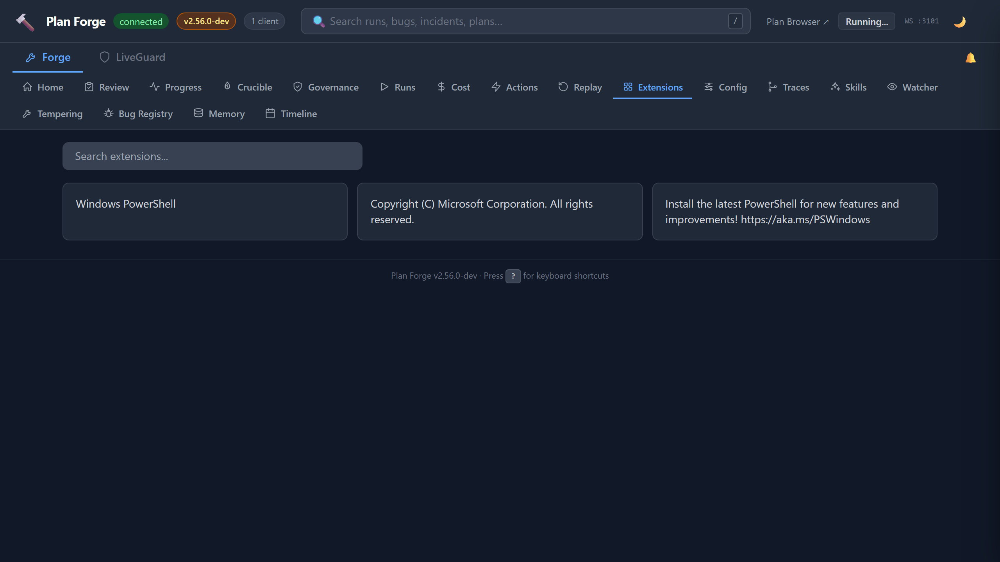
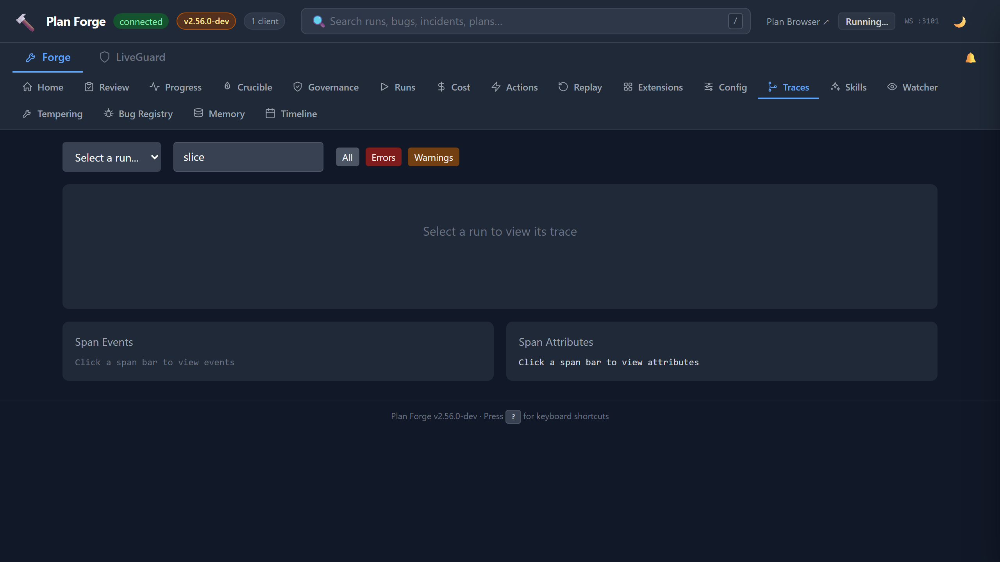
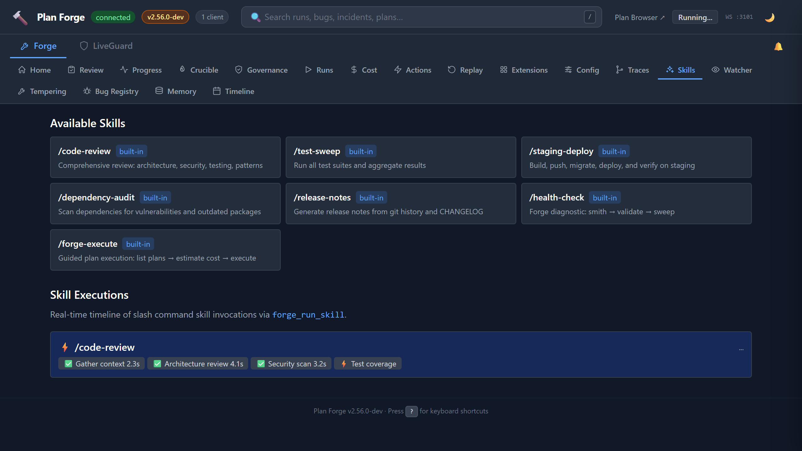
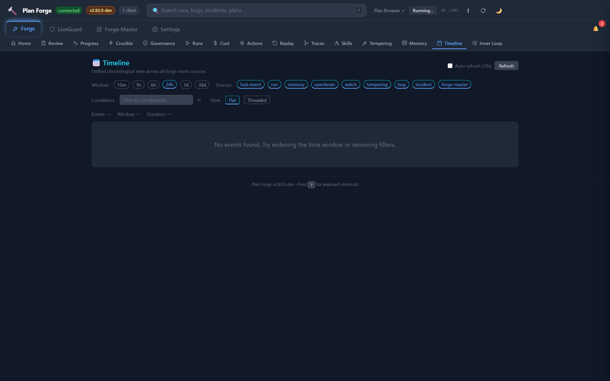

The Dashboard
37 tabs across 4 top-level groups (Forge / LiveGuard / Forge-Master / Settings). Real-time execution monitoring, cost tracking, session replay, one-click actions, watcher live feed, and LiveGuard health.
Starting the Dashboard
The dashboard is part of the MCP server (Model Context Protocol, the standard that lets AI agents call functions). Start it, then open your browser:
# Full MCP server (stdio + HTTP + WebSocket)
node pforge-mcp/server.mjs
# Dashboard + REST API only (no MCP stdio)
node pforge-mcp/server.mjs --dashboard-onlyOpen localhost:3100/dashboard. The dashboard connects via WebSocket on port 3101 for real-time updates.
.vscode/mcp.json configured (created during setup), the MCP server starts automatically when Copilot uses a forge tool. The dashboard is always available at port 3100 while the server runs.
Tab Categories
The dashboard groups its tabs into 4 top-level groups (Forge / LiveGuard / Forge-Master / Settings). Knowing which group a tab lives in is the fastest way to find what you're looking for, especially across the 37 tabs total. Click a group tab in the top nav to expose its sub-tabs.
| Group | Tabs | Purpose |
|---|---|---|
| Forge (19) | Home, Review, Progress, Crucible, Governance, Runs, Cost, Actions, Replay, Traces, Skills, Tempering, Memory, Timeline, Inner Loop, Extensions, Anvil/Lattice, GitHub Metrics, Team Dashboard | Build, execute, ship; active-run monitoring |
| LiveGuard (7) | Health, Incidents, Triage, Security, Env, Watcher, Bug Registry | Post-deploy defense |
| Forge-Master (1) | Studio | Read-only reasoning orchestrator |
| Settings (10) | General, Models, Execution, API Keys, Updates, Memory, Bridge, Crucible, Brain, Copilot | Platform-wide config (safe-write to .forge.json) |
![Dashboard tab taxonomy: 4 top-level groups. Forge (blue, default, 19 tabs) holds Home, Review, Progress, Crucible, Governance, Runs, Cost, Actions, Replay, Traces, Skills, Tempering, Memory, Timeline, Inner Loop, Extensions, Anvil/Lattice, GitHub Metrics, Team Dashboard, covers build/execute/ship and active-run monitoring. LiveGuard (amber, 7 tabs) holds Health, Incidents, Triage, Security, Env, Watcher, Bug Registry, covers post-deploy defense. Forge-Master (cyan, 1 tab) holds Studio, read-only reasoning orchestrator. Settings (purple, 10 sub-tabs) holds General, Models, Execution, API Keys, Updates, Memory, Bridge, Crucible, Brain, Copilot, platform-wide configuration with safe-write to .forge.json.](assets/diagrams/dashboard-tabs-grouped.svg)
Progress Tab
The default view during plan execution. This is where you watch your plan come to life, real-time slice status via WebSocket updates:
Each card shows: slice title, status (queued → executing → passed/failed), duration, model used, token count, and cost. Cards update in real-time as events arrive over WebSocket.

Runs Tab
History of all plan executions. Each row shows:
| Column | Content |
|---|---|
| Plan | Plan file path (clickable → shows slice detail) |
| Status | ✓ Complete, ✗ Failed, ● Partial |
| Slices | Passed / Total count |
| Duration | Total wall-clock time |
| Cost | Total USD across all slices |
| Model | Primary model used |
| Date | Execution timestamp |
Click any row to expand slice-by-slice detail: per-slice tokens, duration, model, and pass/fail status.

Cost Tab
Two visualizations:
- Doughnut chart, spend breakdown by model (which models cost the most)
- Bar chart, monthly trend (cost over time, spot anomalies)
Data comes from .forge/cost-history.json which is updated automatically after each run. The cost tab supports a 23-model pricing table, including Claude, GPT, Grok, Gemini, and custom API providers.

pforge run-plan --estimate to predict costs before executing.
Actions Tab
One-click buttons for common operations, no terminal needed:
Each button calls a forge MCP tool through the generic /api/tool/:name dispatcher (e.g. POST /api/tool/forge_smith, POST /api/tool/forge_sweep) and displays results inline.

Replay Tab
Browse agent session logs from past executions. Each run's .forge/runs/<timestamp>/ directory contains per-slice logs. The Replay tab renders them with:
- Slice selector, pick which slice's log to view
- Error highlighting, errors and warnings highlighted in red/amber
- File filter, filter log entries by file path patterns
- Search, free-text search within the session log
Use this to diagnose why a slice failed, the full agent conversation, including tool calls, is captured.

Extensions Tab
Visual catalog browser with search. Shows all community extensions from extensions/catalog.json:
- Extension name, version, author, category
- What it provides (instruction files, agents, prompts)
- Tags and Spec Kit compatibility
- One-click install button
Equivalent to pforge ext search + pforge ext add but with a visual interface.

Traces Tab
OTLP (OpenTelemetry Protocol) trace waterfall view. Every plan execution emits OpenTelemetry spans:
| Span | What It Captures |
|---|---|
| run (root) | Plan file, total duration, slice count, model |
| └ slice-N | Slice title, status, tokens in/out, cost, gate result |
| └ gate | Gate command, exit code, output |
| └ escalation | If a model failed and escalated to the next in chain |
Click any span to expand: duration, resource attributes (project, version, preset), severity. Traces are stored in .forge/runs/<timestamp>/traces.json and can be exported to any OTLP-compatible backend (Jaeger, Grafana Tempo, etc.).

Skills Tab
Monitor skill executions triggered via forge_run_skill or /slash-command. Shows:
- Recent skill runs, skill name, start time, status, duration
- Step-level detail, each skill step with pass/fail, output, timing
- Event log, WebSocket events (
skill-started,skill-step-completed,skill-completed)

Watcher Tab v2.35
Read-only view of another project's pforge run, consumed from a second VS Code / Copilot session. Subscribes to watch-snapshot-completed, watch-anomaly-detected, and watch-advice-generated hub events emitted by forge_watch / forge_watch_live. Shows:
- Latest snapshot, target path, run state, run ID, anomaly count, diff cursor
- Anomalies feed, severity-coded codes (
stalled,slice-failed,quorum-dissent,quorum-leg-stalled,skill-step-failed,model-escalated, etc.) with message + run ID - Advice history, analyze-mode narratives from the frontier model, with token + timing metadata
- Live Watch + Watch Snapshot cards on the Actions tab copy the matching
pforge watch-live/pforge watchinvocations
Audit-Loop Activation v2.80
The audit loop is opt-in. It's not on a Settings tab, mode is read from .forge.json#audit.mode directly:
- Mode values,
off(default) /auto/always - Max rounds, drain caps after N rounds (default 5)
- Allowed environments,
devandstagingby default; production is hard-blocked unlessallowProduction: truein scanner opts (and even then only with explicit override) - Live progress, drain rounds stream via
tempering-round-completedhub events and surface in the Forge → Tempering tab
Trigger manually with pforge audit-loop --auto (respects .forge.json#audit.mode) or via the forge_tempering_drain MCP tool. See Audit Loop deep dive for the full activation flow.
Timeline Tab v2.82 · 9 sources
Unified chronological view of every event across the shop. Source chips filter the feed:
run, plan executions (slice progress, completes, aborts)incident, LiveGuard incident lifecyclebug, Bug Registry status changesdeploy,forge_deploy_journalentriescrucible, smelt lifecycle (started / question / finalized)fm-turnv2.82, Forge-Master turns (lane + truncated user message + turn number)memory,memory-capturedevents from OpenBraintempering, audit-loop drain roundswatch, watcher snapshot / anomaly / advice events
The CLI equivalent is pforge timeline, same 9 sources, same correlation-id grouping, JSON-pipeable for scripts.

Port Reference
| Port | Protocol | Purpose |
|---|---|---|
3100 | HTTP | Dashboard UI + REST API |
3101 | WebSocket | Real-time events (slice progress, run completion) |
PORT and WS_PORT environment variables, or use --port flag: node pforge-mcp/server.mjs --port 4100.
📄 Full reference: capabilities, Appendix V — Event Catalog (every WebSocket event with payload and retention), EVENTS.md on GitHub (raw JSON schema)